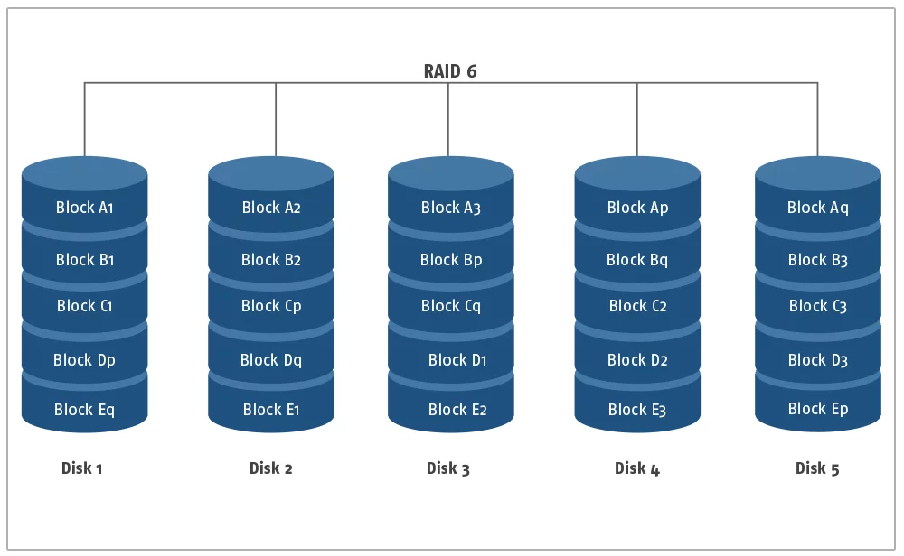
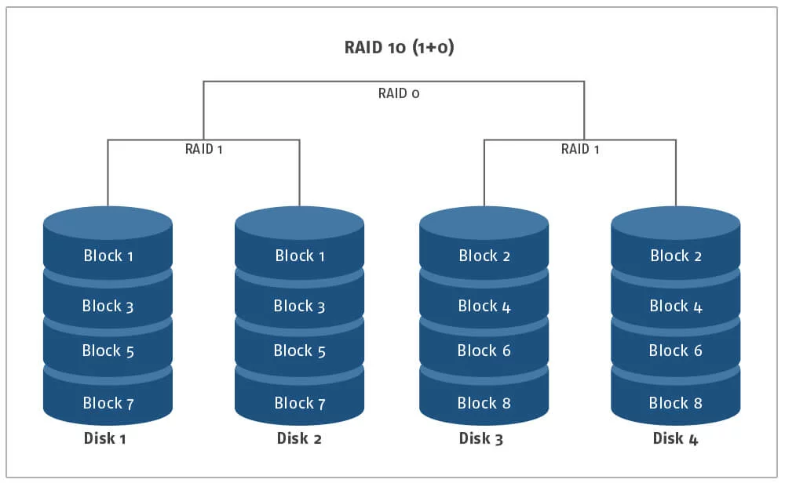
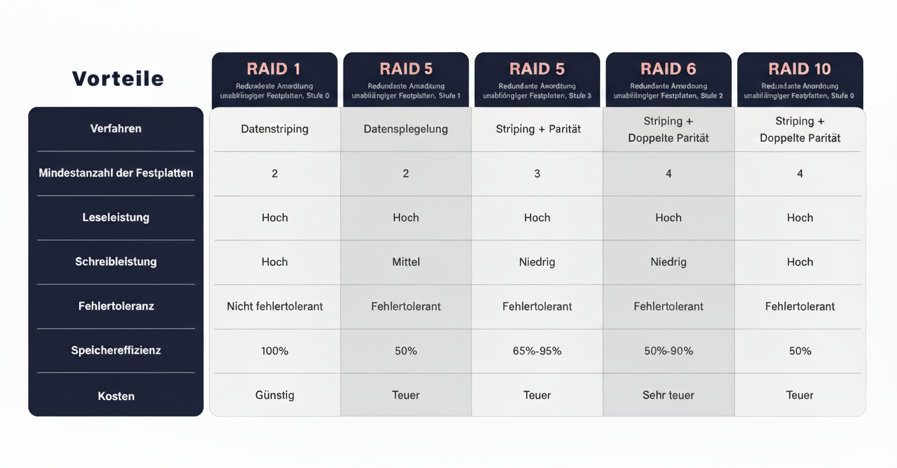
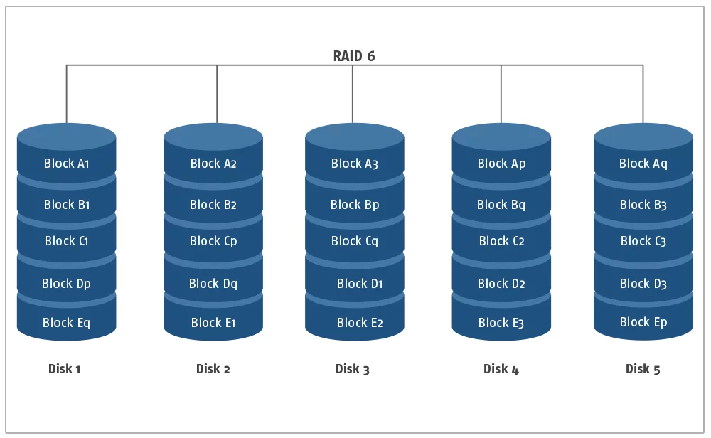
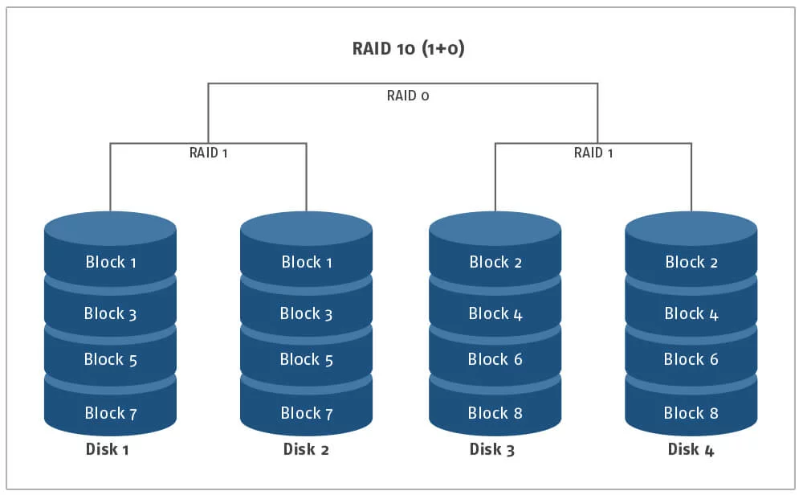
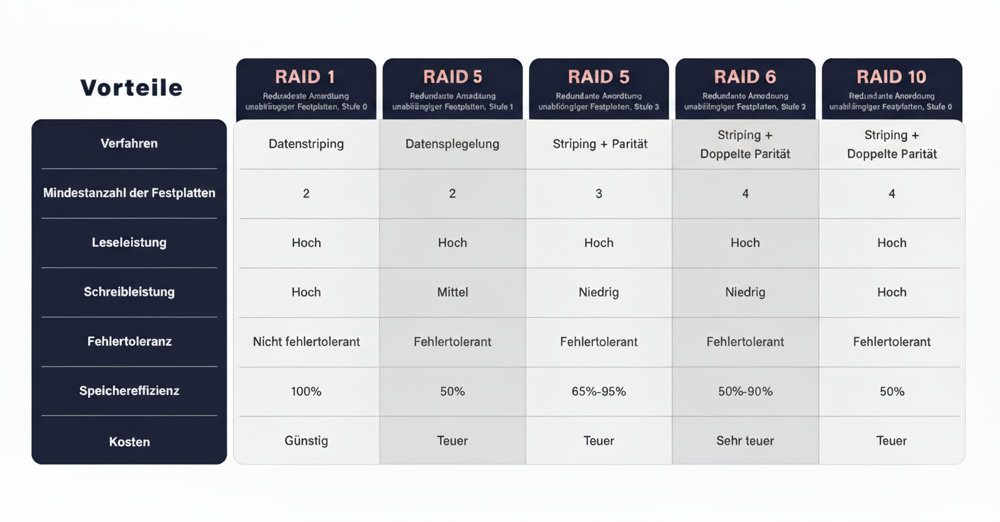

RAID verständlich: Sicherheit & Tempo für deine Daten
RAID kombiniert mehrere Laufwerke zu einem Verbund — Ziel: Ausfallsicherheit, Leistung oder beides.
Was ist RAID?
RAID steht für Redundant Array of Independent Disks. Mehrere physische Laufwerke werden logisch zusammengefasst. Je nach Level liegt der Fokus auf Leistung, Verfügbarkeit oder beidem.
Wichtige RAID-Level
- RAID 0: Striping — maximale Geschwindigkeit, keine Redundanz.
- RAID 1: Spiegelung — einfache, sehr zuverlässige Redundanz.
- RAID 5: Parität — guter Kompromiss aus Kapazität und Schutz (1 Platte toleriert).
- RAID 6: Doppelte Parität — 2 Platten tolerierbar; sicherer bei großen Arrays.
- RAID 10: Spiegelung + Striping — hohe Leistung & Redundanz.
 





Aufgabe des Bauteils (RAID-Controller)
Datenverteilung
Steuert Striping, Mirroring, Parity und definiert die logische Struktur des Arrays.
Fehlerbehandlung
Erkennt defekte Sektoren/Laufwerke, markiert Ersatzlaufwerke und startet Rebuilds.
Caching & Queueing
Write-Back / Write-Through, Warteschlangenoptimierung, I/O-Priorisierung.
Hardware vs. Software
- Software-RAID: flexibel, günstig, nutzt CPU (z. B. mdadm, ZFS, Storage Spaces).
- Hardware-RAID: dedizierte Controller mit Cache/BBU; stabiler bei großen HDD-Arrays.
Anbindung an den Rechner / Schnittstellen
Interne Schnittstellen
- SATA: bis 6 Gbit/s – typisch für HDD/2.5" SSD.
- SAS: 12–24 Gbit/s, Dual-Port, robustere Fehlermechanismen.
- NVMe (PCIe): sehr hohe IOPS & niedrige Latenz.
Externe Anbindung
- USB 3.x: einfach, für kleine Verbunde.
- Thunderbolt: bis 40 Gbit/s für schnelle externe Arrays.
- NAS / SAN: iSCSI, NFS/SMB, Fibre Channel — RAID liegt im NAS/SAN.
Die wichtigsten Kenngrößen
Kapazität
RAID 0 = Summe; RAID 1 = kleinste Platte; RAID 5 = Summe−1; RAID 6 = Summe−2; RAID 10 ≈ 50%.
IOPS & Durchsatz
IOPS = viele kleine Operationen/s (Datenbanken); Durchsatz = MB/s bei großen Dateien (Backups, Video).
Latenz
NVMe deutlich niedriger als SATA/SAS/HDD; Paritäts-RAIDs erhöhen Schreiblatenz.
Fehlertoleranz
RAID 1: Spiegel je 1; RAID 5: 1; RAID 6: 2; RAID 10: abhängig.
URE / MTTDL
Unrecoverable Read Error beeinflusst Rebuild-Risiko — relevant bei großen HDDs.
Rebuild-Zeit
Dauer der Wiederherstellung (Stunden–Tage bei großen HDDs; währenddessen erhöhtes Risiko).
Eignung und Leistungsbewertung
Schritt-für-Schritt
- Ziel: Verfügbarkeit, Leistung oder Kapazität?
- Workload: Random I/O vs. sequentiell?
- Medien: HDD für Kapazität, SSD/NVMe für IOPS.
- Level passieren: RAID 0/1/5/6/10 je nach Ziel.
- Schnittstelle prüfen: SATA, SAS, PCIe/NVMe, Thunderbolt, Netz.
- Controller/Software: Cache, BBU, Hot-Spare, Monitoring.
- Benchmark: CrystalDiskMark, fio für objektive Messwerte.
Daumenregeln
- Viele kleine Zugriffe → SSD/NVMe + RAID 10 oder RAID 1.
- Große Dateien → HDD + RAID 6; RAID 5 nur bei kleineren Arrays.
- Viel Schreiblaste → RAID 10 oder RAID 6.
- Größere Platten → RAID 6 wegen URE-Risiko.
Kurzfazit
- Tempo + Schutz: RAID 10 mit SSD/NVMe.
- Kapazität + Sicherheit: RAID 6 auf HDD + Hot-Spare.
- Einfach & günstig: RAID 1.
- Nur Tempo: RAID 0 — nur mit Backup!